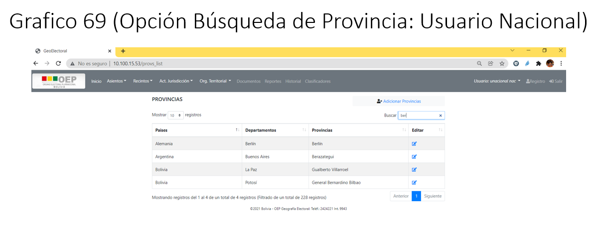

6. Org. Territorial
a. Usuario Nacional
El presente usuario tendrá activo las opciones:
País
Departamento
Provincia
Municipio
{kind=link}
Opción País
A través de esta opción, se podrá registrar países en base a ciertos parámetros establecidos por el TSE.
{kind=link}
Adicionar nuevo País
A través de opción podrá registrar un nuevo País.
Procedimiento para el Registro de un Nuevo País:
Paso 1: Para el registro de un nuevo país, debe llenar todos los campos.
Paso 2: Una vez registrado todos los datos se debe presionar en el botón Aceptar, para registrar el nuevo país.
{kind=link}
Modificar País
A través de opción podrá modificar un País.
Procedimiento para la Modificación de un País:
Paso 1: Para modificar un país, deberá hacer click en el icono Editar, el cual le llevara al formulario de modificación del país.
Paso 2: Una vez realizado los cambios a los datos del país se procederá a aceptar los cambios a través del botón Aceptar, el cual le permitirá guardar los cambios realizados en los datos del país.
Nota.- Si no requiere que se modifiquen los datos se deberá presionar en el botón Cancelar, para eliminar cualquier cambio realizado en el formulario de modificación del País.
{kind=link}
Búsqueda de País(es)
Esta opción le permitirá realizar búsqueda de manera selectiva, es decir la búsqueda se podrá realizar por cualquiera de las columnas desplegadas.
Procedimiento para la Búsqueda de un País:
Paso 1: Para realizar la búsqueda de una determinado país ó paises deberá hacer click en el visor de búsqueda Buscar.
Paso 2: A través de este visor de búsqueda se podrá digitar en él, el parámetro por el cual se realizara la búsqueda.
{kind=link}
Opción Departamento
A través de esta opción, se podrá registrar departamentos en base a ciertos parámetros establecidos por el TSE.
{kind=link}
Adicionar nuevo Departamento
A través de opción podrá registrar un nuevo Departamento.
Procedimiento para el Registro de un Departamento:
Paso 1: Para el registro de un nuevo departamento, debe seleccionar el país para el cual se generara el departamento, luego llenar todos los campos.
Paso 2: Una vez registrado todos los datos se debe presionar en el botón Aceptar, para registrar el nuevo departamento.
{kind=link}
Modificar Departamento
A través de opción podrá modificar un Departamento.
Procedimiento para la Modificación de un Departamento:
Paso 1: Para modificar un departamento, deberá hacer click en el icono Editar, el cual le llevara al formulario de modificación del departamento.
Paso 2: Una vez realizado los cambios a los datos del departamento se procederá a aceptar los cambios a través del botón Aceptar, el cual le permitirá guardar los cambios realizados en los datos del departamento.
Nota.- Si no requiere que se modifiquen los datos se deberá presionar en el botón Cancelar, para eliminar cualquier cambio realizado en el formulario de modificación del Departamento.
{kind=link}
Búsqueda de Departamento(s)
Esta opción le permitirá realizar búsqueda de manera selectiva, es decir la búsqueda se podrá realizar por cualquiera de las columnas desplegadas.
Procedimiento para la Búsqueda de un Departamento:
Paso 1: Para realizar la búsqueda de un determinado departamento ó departamentos deberá hacer click en el visor de búsqueda Buscar.
Paso 2: A través de este visor de búsqueda se podrá digitar en él, el parámetro por el cual se realizara la búsqueda.

Opción Provincia
A través de esta opción, se podrá registrar provincias en base a ciertos parámetros establecidos por el TSE.
{kind=link}
Adicionar nueva Provincia
A través de opción podrá registrar una nueva Provincia.
Procedimiento para el Registro de una Provincia:
Paso 1: Para el registro de una nueva provincia, debe seleccionar el país, departamento para el cual se generara la provincia, luego llenar todos los campos.
Paso 2: Una vez registrado todos los datos se debe presionar en el botón Aceptar, para registrar la nueva provincia.
{kind=link}
Modificar Provincia
A través de opción podrá modificar una Provincia.
Procedimiento para la Modificación de una Provincia:
Paso 1: Para modificar una provincia, deberá hacer click en el icono Editar, el cual le llevara al formulario de modificación de la provincia.
Paso 2: Una vez realizado los cambios a los datos de la provincia se procederá a aceptar los cambios a través del botón Aceptar, el cual le permitirá guardar los cambios realizados en los datos de la provincia.
Nota.- Si no requiere que se modifiquen los datos se deberá presionar en el botón Cancelar, para eliminar cualquier cambio realizado en el formulario de modificación de la Provincia.
{kind=link}
Búsqueda de Provincia(s)
Esta opción le permitirá realizar búsqueda de manera selectiva, es decir la búsqueda se podrá realizar por cualquiera de las columnas desplegadas.
Procedimiento para la Búsqueda de una Provincia:
Paso 1: Para realizar la búsqueda de una determinada provincia ó provincias deberá hacer click en el visor de búsqueda Buscar.
Paso 2: A través de este visor de búsqueda se podrá digitar en él, el parámetro por el cual se realizara la búsqueda.
{kind=link}
Opción Municipio
A través de esta opción, se podrá registrar municipios en base a ciertos parámetros establecidos por el TSE.
{kind=link}
Adicionar nuevo Municipio
A través de opción podrá registrar un nuevo Municipio.
Procedimiento para el Registro de un Municipio:
Paso 1: Para el registro de un nuevo municipio, debe seleccionar el país, departamento, provincia, para el cual se generara el municipio, luego llenar todos los campos.
Paso 2: Una vez registrado todos los datos se debe presionar en el botón Aceptar, para registrar el nuevo municipio.
{kind=link}
Modificar Municipio
A través de opción podrá modificar un Municipio.
Procedimiento para la Modificación de una Provincia:
Paso 1: Para modificar un municipio, deberá hacer click en el icono Editar, el cual le llevara al formulario de modificación del municipio.
Paso 2: Una vez realizado los cambios a los datos del municipio, se procederá a aceptar los cambios a través del botón Aceptar, el cual le permitirá guardar los cambios realizados en los datos del municipio.
Nota.- Si no requiere que se modifiquen los datos se deberá presionar en el botón Cancelar, para eliminar cualquier cambio realizado en el formulario de modificación del Municipio.
{kind=link}
Búsqueda de Municipio(s)
Esta opción le permitirá realizar búsqueda de manera selectiva, es decir la búsqueda se podrá realizar por cualquiera de las columnas desplegadas.
Procedimiento para la Búsqueda de un Municpio:
Paso 1: Para realizar la búsqueda de un determinado municipio ó municipios deberá hacer click en el visor de búsqueda Buscar.
Paso 2: A través de este visor de búsqueda se podrá digitar en él, el parámetro por el cual se realizara la búsqueda.
{kind=link}
b. Usuario Departamental
El presente usuario tendrá activo las opciones:
País
Departamento
Provincia
Municipio
{kind=link}
Opción País
A través de esta opción, se podrá registrar países en base a ciertos parámetros establecidos por el TSE.
Nota.- Todas las operaciones que se realizan en la presente opción son similares al del usuario TSE, solo que estas acciones están orientadas a los permisos asignados a los usuarios TED.
Opción Departamento
A través de esta opción, se podrá registrar departamentos en base a ciertos parámetros establecidos por el TSE.
Nota.- Todas las operaciones que se realizan en la presente opción son similares al del usuario TSE, solo que estas acciones están orientadas a los permisos asignados a los usuarios TED.
Opción Provincia
A través de esta opción, se podrá registrar provincias en base a ciertos parámetros establecidos por el TSE.
Nota.- Todas las operaciones que se realizan en la presente opción son similares al del usuario TSE, solo que estas acciones están orientadas a los permisos asignados a los usuarios TED.
Opción Municipio
A través de esta opción, se podrá registrar municipios en base a ciertos parámetros establecidos por el TSE.
Nota.- Todas las operaciones que se realizan en la presente opción son similares al del usuario TSE, solo que estas acciones están orientadas a los permisos asignados a los usuarios TED.